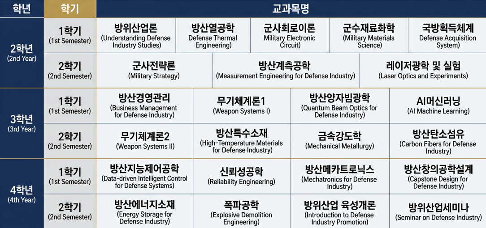

융합형 교육과정
공학, 경제·경영, 정책학을 아우르는 방위산업 특화 커리큘럼을 제공합니다.
Convergence Major
첨단국방기술과 방위산업 정책, 경영전략을 융합해 글로벌 방위산업 생태계를 이끌 미래 인재를 양성합니다.
전북대학교 방위산업융합전공은 글로벌 방위산업 생태계 변화에 맞춰 첨단국방기술 및 무기체계 개발, 방위산업 정책 및 경영전략, 무기수출 등을 융합적으로 학습하는 학제 간 교육 프로그램입니다.
공학, 경제·경영, 정책학을 아우르는 방위산업 특화 커리큘럼을 제공합니다.

국내외 방산 전문가 초청 특강과 글로벌 협력 프로그램을 운영합니다.

방위사업청, 방산기업, 국책연구기관과 연계한 프로젝트형 실무 교육을 지원합니다.

국내외 방산기업 및 기관 취업을 위한 진로 컨설팅과 직무 이해를 돕습니다.
국방첨단기술, 방위산업 정책, 시장 분석, 연구개발 프로세스를 함께 이해하는 융합형 실무 역량을 기릅니다.

| 구분 | 학년 | 이수학점 | 인정교과목 | 계 |
|---|---|---|---|---|
| 학점 | 2, 3, 4학년 | 24 | 12(4과목) | 36 |
※ 매 학기 6학점, 최대 18학점 / 원 전공 학사학위 + 방위산업융합학사 동시 수여
국내외 방산기업, 연구기관, 국방 공공기관 등에서 활약할 수 있도록 다양한 진로 지원 프로그램을 제공합니다.


기업 및 기관의 현장 문제를 기반으로 실무형 프로젝트를 수행하며 직무 경험을 확장합니다.